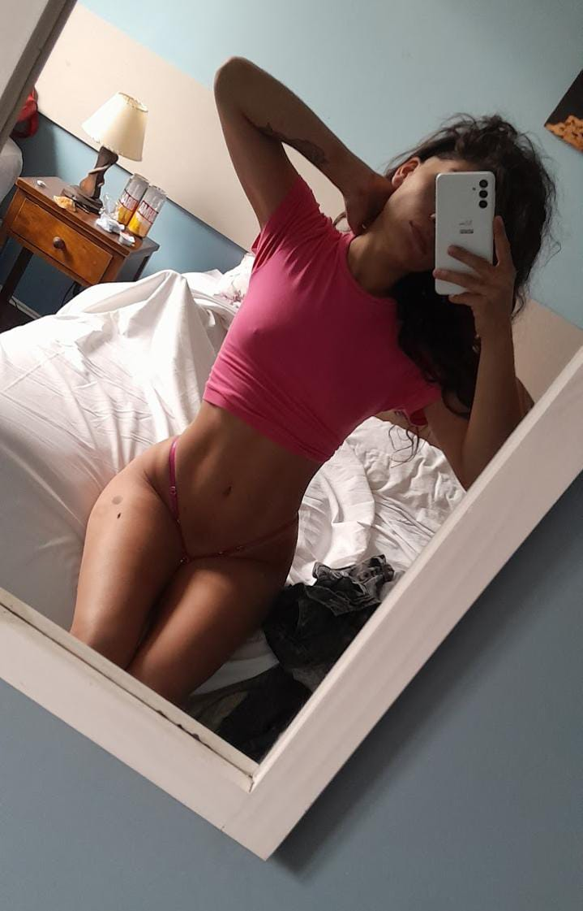
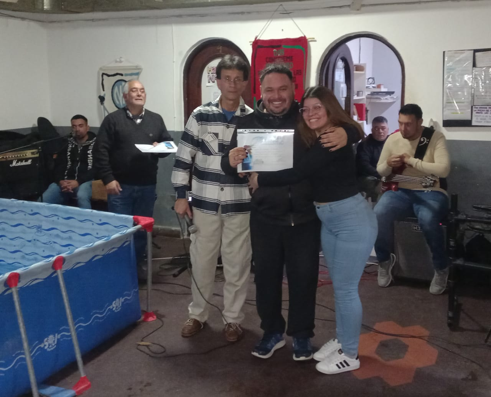

Evelyn Denise Vallejos
Cuando vivir dejó de ser vivir
El fondo

Durante años viví atrapada en el consumo activo. No fue una etapa rebelde ni una mala racha: fue un pozo profundo que me fue quitando todo de a poco, incluso las ganas de seguir.
Perdí vínculos, confianza y momentos irrecuperables con mi familia. Me alejé de quienes me amaban, mentí, fallé y rompí promesas, pero lo más doloroso fue haberme perdido a mí misma.
Vivía con miedo, ansiedad y un vacío constante. Estuve varias veces al borde de la muerte, atravesando consecuencias físicas y emocionales que pusieron en pausa mis sueños y mi identidad.
Toqué fondo más de una vez. Y aunque seguía respirando, por dentro ya no estaba viviendo.
Mi cuerpo también habló

Mi cuerpo fue el reflejo de todo lo que estaba pasando por dentro. Adelgacé de una manera alarmante. Me miraba al espejo y no me reconocía: estaba pálida, débil, sin brillo en los ojos.
Perdí fuerza, salud y dignidad. Dejé de cuidarme, de alimentarme bien, de respetarme. Cada kilo menos no era un logro, era una señal de auxilio que yo misma ignoraba.
No era solo estar flaca. Era estar rota. Era estar vacía. Era estar desapareciendo de a poco.
Amar en la oscuridad

En ese tiempo oscuro no estuve sola. A mi lado estaba mi pareja, Federico Fernández Daguerre, también atrapado conmigo en la misma oscuridad.
Juntos atravesamos situaciones límite, pérdidas, dolor y momentos en los que la muerte parecía estar siempre cerca. No sabíamos cómo salir, solo sobrevivíamos.
Hoy, gracias a Dios, ambos estamos limpios. Sabemos que si no hubiera sido por Su gracia y misericordia, no sabríamos dónde estaríamos —o si siquiera estaríamos vivos.
Ese pasado nos marcó, pero también fue el punto exacto desde donde comenzó una vida nueva.